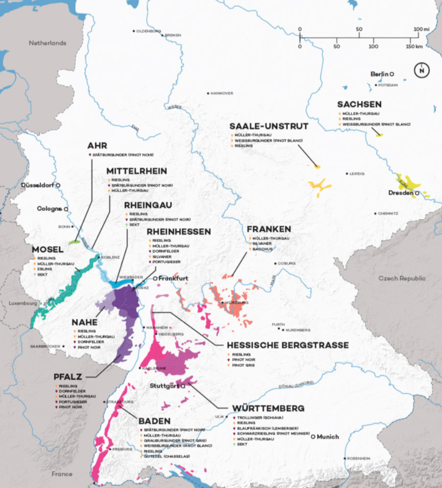

Germany
If You Only Have Time for the Class 6 BX
| Wine | Varietal / Region | Notes | Taste | Est. Price |
|---|---|---|---|---|
| Blue Nun Riesling (classic Spätlese) | Riesling / Rheinhessen, semi-sweet | A BX staple — easy-drinking, fruity, gentle sweetness. A nostalgic winemaking classic. | Fruity, sweet, easy | $12–18 |
| Liebfraumilch (entry-level blend) | Blend / Rheinhessen-Mosel | Familiar and approachable. As noted by a base shopper: "I tried Spaetlase… the blue bottle with the Nun … very good" | Simple, soft, smooth | $10–15 |
| Dr. Loosen "Blue Slate" Riesling Kabinett | Riesling / Mosel, off-dry | One of the few slightly upscale bottles you may still spot — elegant, fresh minerality. | Mineral, elegant, fresh | $18–22 |
| Henkell Trocken Sekt (sparkling) | Sparkling / Rheingau, dry | A crisp, food-friendly celebration wine often stocked in BX celebrations. | Crisp, dry, festive | $15–20 |
| Rotkäppchen Pinot Grigio Rosé | Pinot Grigio Rosé / Rheinhessen–Rheingau | Light, summery, and approachable — paparazzi pink without the fuss. | Light, fruity, pink | $12–16 |
| Hans Wirsching Silvaner Trocken | Silvaner / Franken, dry white | A bit rarer, but if stocked, it displays refreshing herbal notes and savory complexity. | Herbal, dry, savory | $18–24 |
If You Can Go Off-Base
| Wine | Varietal / Region | Notes | Taste | Est. Price |
|---|---|---|---|---|
| Joh. Jos. Prüm Wehlener Sonnenuhr Spätlese | Riesling / Mosel, off-dry | Slate-driven minerality, citrus-honey aromatics, age-worthy | Elegant, honeyed, mineral | 25–35€ |
| Keller Kirchspiel Riesling GG | Riesling / Rheinhessen, dry | Top-tier Grosses Gewächs with finesse and structure; Vivino's #1 German Riesling | Structured, dry, refined | 60–80€ |
| Dönnhoff Kupfergrube GG | Riesling / Nahe, dry | From a VDP icon; taut, mineral-driven, and praised by critics | Taut, crisp, mineral | 50–70€ |
| Künstler Riesling Rheingau "Hölle" GG | Riesling / Rheingau, dry | 2023's German Wine of the Year by James Suckling; classic Rheingau power | Bold, dry, classic | 50–70€ |
| Wittmann Morstein GG | Riesling / Rheinhessen, dry | Brilliant limestone complexity; top-10 in 2023's Top100 Germany | Limestone, bold, fresh | 50–70€ |
| Battenfeld-Spanier Riesling GG | Riesling / Rheinhessen, dry | VDP biodynamic estate with elegant terroir expression | Sharp, elegant, earthy | 40–60€ |
| Hans Wirsching Iphöfer Silvaner GG | Silvaner / Franken, dry | Franconia's flagship Silvaner: savory, herbal, mineral-rich | Savory, herbal, mineral | 25–35€ |
| Joh. Jos. Prüm Riesling Kabinett | Riesling / Mosel, light | Lighter, crisp, food-friendly — perfect intro to Prüm style | Crisp, light, refreshing | 20–30€ |
| Bernhard Huber Schlossberg Spätburgunder GG | Pinot Noir / Baden | Elegant Burgundian-style red — Germany's rising red wine star | Silky, red, elegant | 30–50€ |
Riesling
German wines are mostly white — about two-thirds of all wine produced in Germany comes from white grapes. The most famous is Riesling, which is super versatile and can be dry (trocken), off-dry (halbtrocken), or sweet (spätlese, auslese). It often tastes like green apple, peach, or lemon with a crisp, refreshing finish.
German Wine Sweetness Scale


Region & Grape Overview

Most Common Grapes in Germany
Riesling 23%
Müller-Thurgau 13%
Spätburgunder (Pinot Noir) 12%
Dornfelder 8%
Silvaner 5%
Kerner 3%
Other 24%